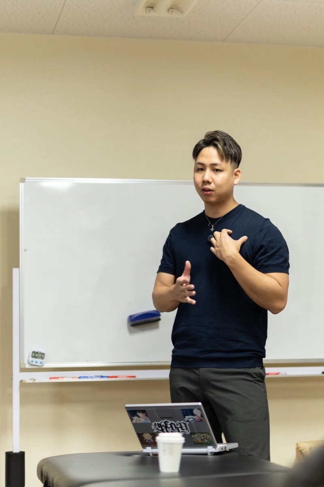
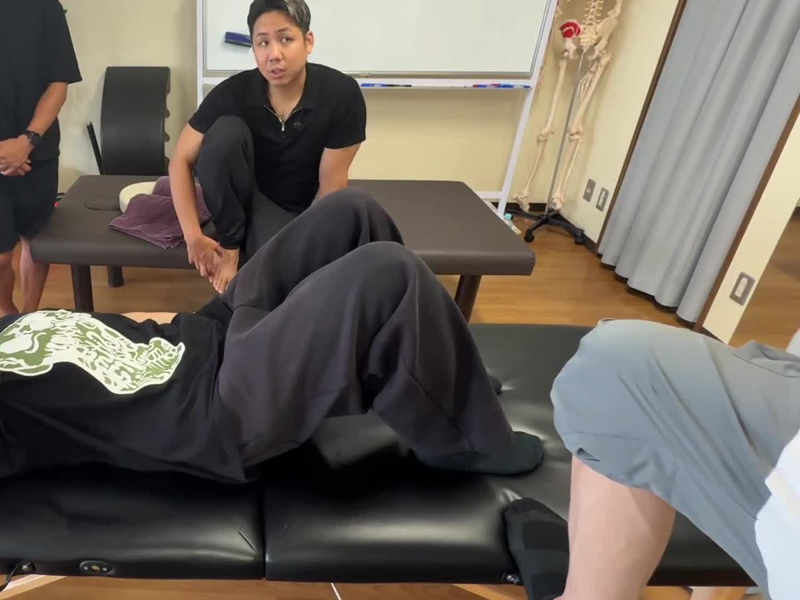
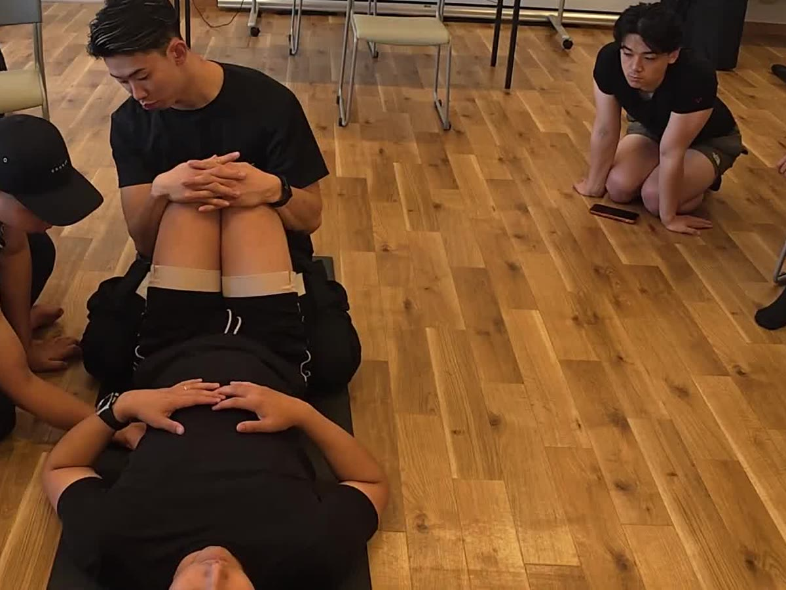
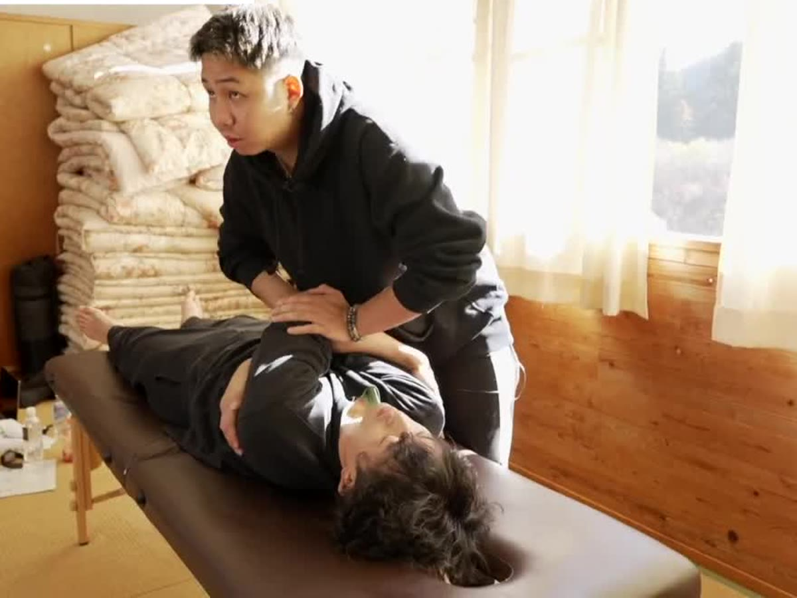
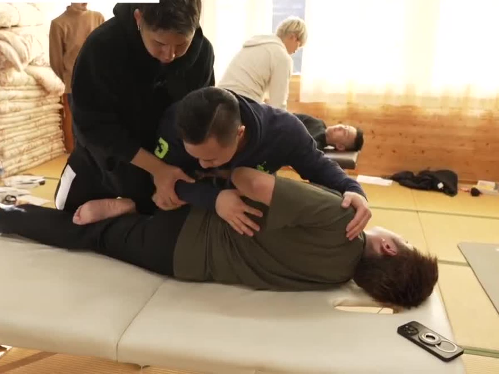
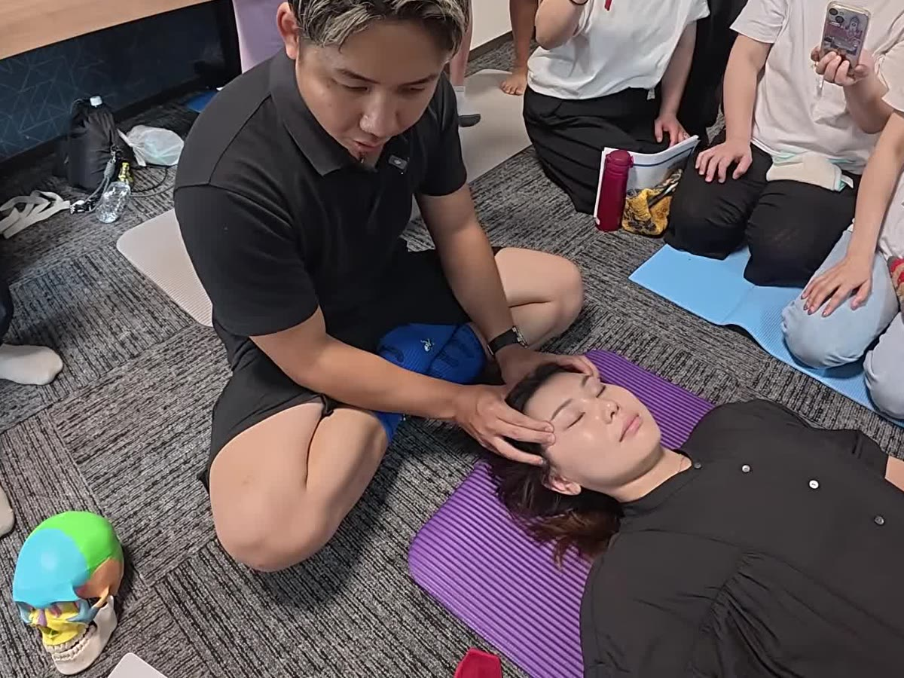

1月｜入門
ZERO式-ハンドベースコンディショニング
セミナー詳細を見る手を「脳に情報を送るセンサー」と「身体を支える土台」の両面から捉え、評価・手を作る手順・動作での比べ方までを1日で練習する入門講座です。実技が8割です。
- 日程
- 2027年1月16日（土）（東京）
- 形式
- 対面＋オンライン
- 受講条件
- なし（どなたでも受講できます）
- 受付
- 受付中
ZERO SEMINAR 2027
トレーナー・セラピストなど、身体に関わる専門職の方へ。
「触れる手」をつくる入門講座から、ZERO式の技術を統合する上位講座まで。2027年は東京を中心に、毎月1講座を開催します。
NOW OPEN
受付中
2027年1月16日（土）｜東京｜対面＋オンライン
申込期限：2026年11月24日（火）まで（受付開始から1週間）

INSTRUCTOR
原口 慶篤はらぐち のりあつ（のりお）
TOTAL BODY FITNESS THEORY 代表 ／ ZERO式 founder
パーソナルトレーナー・整体師（歴12年）
全講座を担当する講師です。パーソナルトレーナー・整体師として12年、現場でお客様に向き合いながら、人体解剖実習やオステオパシーで学びを重ねてきました。その経験を、トレーナー・セラピストが現場で使える技術として伝えています。
講師の詳しいプロフィールを見るLEARNING PATH
ZERO式の講座は、入門から統合までの段階に分かれています。興味や目的に合わせて講座を選べます。すべてを順番に受講する必要はありません。必要な修了歴や参加日数は、各講座の受講条件をご確認ください。
ZERO式-ハンドベースコンディショニング／ZERO式-フットベースコンディショニング。受講条件なし。
ZERO式の中心となる技術。受講条件なし。
美姿勢、経絡ストレッチ、関節調整法、内臓調整など。関節調整法ADVANCEはBASIC修了者が対象。
ZERO式の技術を統合する最上位講座。ZERO式-ヘッドコンディショニング極の修了者が対象。
事前の修了歴が必要な講座：ZERO式-関節調整法 ADVANCE（BASIC修了者）／ZERO式-ZERO RECOVERY 第2期（ZERO式-ヘッドコンディショニング極の修了者）
2027 SCHEDULE
各講座は年1回、1ヶ月に1講座の開催です。会場は東京です（7月の合宿のみ開催地未定。決まり次第お知らせします）。会場の詳細は、お申し込みの締め切り後、ご入金を確認した方にご案内します。
※日程は予定です。変更がある場合は公式LINEでお知らせします。

PROFILE
TOTAL BODY FITNESS THEORY 代表 ／ ZERO式 founder
パーソナルトレーナー・整体師（歴12年）
パーソナルトレーナー・整体師として12年、現場でお客様の身体に向き合ってきました。人体解剖実習には5回参加し、オステオパシーではスラスト（BASIC・ADVANCE）と内臓調整を学んでいます。教科書の知識を、実際の身体で確かめてきた経験が、ZERO式の講座の土台です。
ZERO式で大切にしているのは、目の前の一人をよく見て、必要なことを、必要な分だけ行うこと。技術を選ぶ理由にも、手を止める判断にも責任を持つ姿勢を、技術と一緒に伝えています。
※整体師は国家資格ではありません。
SEMINARS
対象：トレーナー・セラピストなど、身体に関わる専門職の方（受講条件のある講座は各カードに記載）
料金・時間・定員：各講座の受付開始時にご案内します。会場の詳細は、お申し込みの締め切り後、ご入金を確認した方にご案内します。講座の内容とカリキュラムは「セミナー詳細を見る」からご確認ください。
ZERO MEMBERS 有料会員：2027年の対象セミナーを通常受講料の15％OFFで受講いただけます（一般の方は通常価格）。会員特典について
手を「脳に情報を送るセンサー」と「身体を支える土台」の両面から捉え、評価・手を作る手順・動作での比べ方までを1日で練習する入門講座です。実技が8割です。

ZERO式の中心となる講座です。耳・顎・顔・頭皮・首の後ろまでを、決まった順番で整えるヘッドコンディショニングを、評価から再評価まで2日間で練習します。

足を、身体を支える土台と床からの情報を受け取る入り口の両面から捉えます。足部を整えたあと、硬い足と柔らかい足を切り替える運動を選び、歩行で比べるまでを1日で練習する入門講座です。実技が8割です。

姿勢を「感覚を統合した結果（出力）」として捉え、7ステップの評価から、体の土台・感覚を整え、日常の動きに移す運動までを2日間で練習します。

関節の動きを理解したうえで行う、2〜3秒の短いストレッチと、経絡の流れに沿った全身ストレッチを2日間で学びます。評価から選び、運動につなげるまでを練習します。

ボディメイクを求めるお客様に、施術という手段で応えるための考え方と技術を学びます。

海の日の3連休に行う合宿形式の講座です。開催地は未定で、決まり次第お知らせします。

内臓の役割・神経・ホルモン・感情のつながりを理解し、腹診・舌診・脈診と腹部の検査で評価します。横隔膜とファシアから内臓を整え、施術の前後で変化を確かめたうえで、ダイエット・ボディメイク、内臓疲労の回復、生活・運動の提案まで現場で使える形にします。

ZERO式-関節調整法の基礎編です。関節の評価から調整までの基本を学びます。ADVANCEへ進むための講座です。

ZERO式-関節調整法の応用編です。BASICで学んだ評価と基本技術を、より実践的な調整へ広げます。
女性ホルモンの変化が骨・筋・骨盤底・自律神経・バランスに与える影響を理解し、40代から70代の女性のお客様を評価して、施術と運動で「転ばない・続けられる体」を支える方法を1日で学びます。

全身疲労を評価し、ZERO式の技術を組み合わせて一つの施術として設計する、ZERO式の集大成となる講座です。
条件に合う講座はありません。「すべて表示に戻す」で全講座を表示できます。
※カードの写真は過去のセミナーの様子です。
ENTRY
各講座の受付は、開催月の2ヶ月前に開始します（例：1月の講座は2026年11月、12月の講座は2027年10月）。受付期間は、受付開始から1週間です（定員に達した場合は、期間内でも締め切ることがあります）。受付開始のお知らせは公式LINEでお届けします。
MEMBERS
ZERO MEMBERSの有料会員は、2027年の対象セミナーを通常受講料の15％OFFで受講いただけます。継続して学ぶ皆さまの、現場での実践と技術の習得を応援します。
一般のお申し込みは通常価格でのご案内となります。早期申込割引はありません。各講座の受講料・定員・会員割引の適用条件は、受付開始時にご案内します。
※無料の公式LINE登録や無料コミュニティへの参加は、有料会員割引の対象ではありません。
OFFICIAL LINE
受付中の講座は各詳細ページからお申し込みいただけます。受付開始のご案内を公式LINEでお届けします。